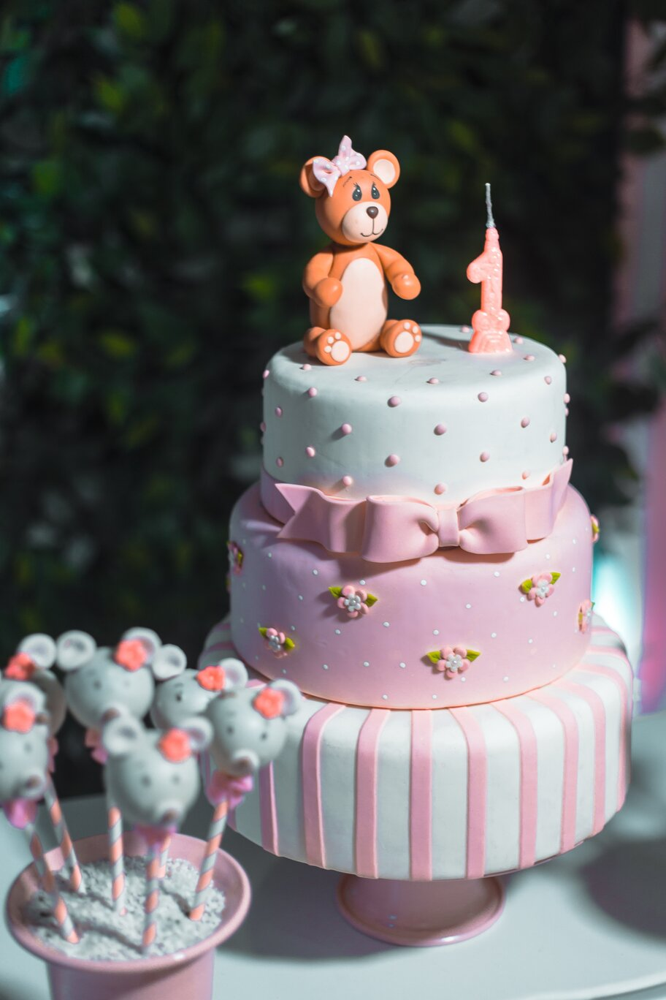
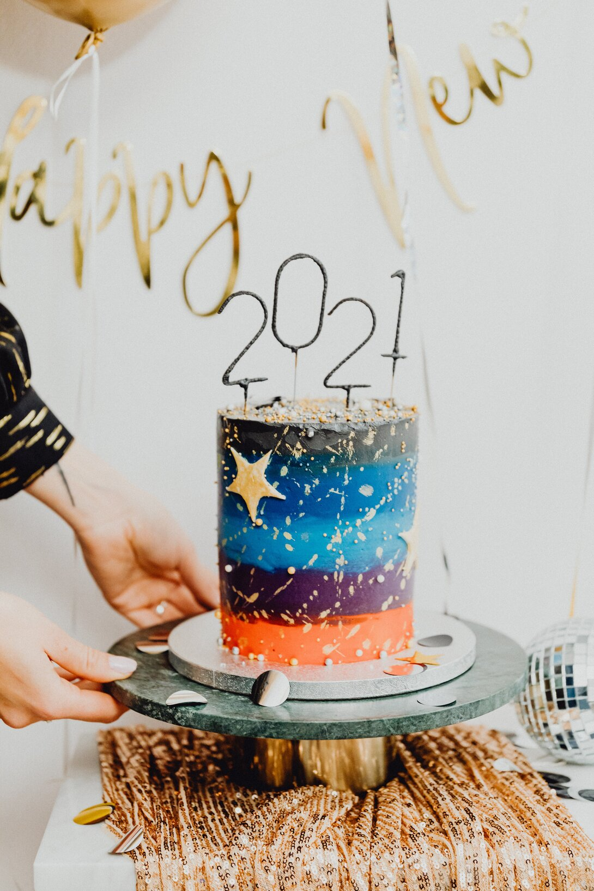

We are happy to design a cake for any party. Let your imagination
go wild! Custom cakes are priced by size and level of decoration.
We can make you a birthday cake or a wedding cake.
Whether is your big day, rehearsal dinner, engagement party, or
shower, we have the most amazing and delicious cakes and treats for
your celebrations. Customized with your choice of flavor, filling
and frosting. Our cakes are bakes entirely from scratch and hand
decorated in butter cream or fondant.
Our unique birthday and wedding cakes, including the hot trend of
birthday/wedding cakes with cupcakes, have become the choice of many
clients. Cakes are available in traditional styles as well as
outrageous themes. The sky is the limit for your special day so make
a statement.
We offer stand rentals, delivery and/or set up throughout the Punto
Fijo area. We recommend one large cupcake or two-three mini cupcakes
per guest. When selecting multiple flavors, you will want to increase
the number a bit since many guests have been known to indulge in
more than one cupcake! Do not forget to order a cake for your
ceremonial cut.
We offer complimentary tasting appointments for up to four guests.
Clients may select up to six flavors to sample and consultations
last 45-60min. To schedule an appointment email orders@dannisbakery.com.


Month's Recipe
Carrot Cake
2 cups (260g) chopped pecans (1 cup for cake, 1 cup for garnish. Nuts are optional. )*
1 and 1/2 cups (300g) packed light or dark brown sugar
1/2 cup (100g) granulated sugar
1 cup (240ml) vegetable oil or canola oil (or melted coconut oil)*
4 large eggs
3/4 cup (133g) smooth unsweetened applesauce
1 teaspoon pure vanilla extract
2 and 1/2 cups (312g) all-purpose flour (spoon & leveled)
2 teaspoons baking powder
1 teaspoon baking soda
1/2 teaspoon salt
1 and 1/2 teaspoons ground cinnamon
1 teaspoon ground ginger
1/4 teaspoon ground nutmeg
1/4 teaspoon ground cloves
2 cups (260g) grated carrots (about 4 large)
Cream Cheese Frosting:
16 ounces (450g) full-fat block cream cheese, softened to room temperature
1/2 cup (115g) unsalted butter, softened to room temperature
4 cups (480g) confectioners’ sugar
1 and 1/2 teaspoons pure vanilla extract
pinch of salt, to taste
Make the cake: Preheat oven to 300°F (149°C). Line a large baking sheet with parchment paper or a silicone baking mat. Spread the chopped pecans on the sheet and toast for 7-8 minutes. Remove from the oven and allow to cool for 10-15 minutes.
Turn the oven up to 350°F (177°C). Grease two or three 9-inch cake pans, line with parchment paper, then grease the parchment paper. Parchment paper helps the cakes seamlessly release from the pans.
Whisk the brown sugar, granulated sugar, oil, eggs, applesauce, and vanilla together in a large bowl until combined and no brown sugar lumps remain. In another large bowl, whisk the flour, baking powder, baking soda, salt, cinnamon, ginger, nutmeg, and cloves together. Pour the wet ingredients into the dry ingredients and, using a rubber spatula or wooden spoon, fold the ingredients together until just combined. Fold in the carrots and 1 cup of the toasted pecans. (The rest of the pecans are for garnish.)
Pour/spoon the batter evenly into the cake pans. If using three cake pans, bake for 20-24 minutes. If using two cake pans, bake for 30-35 minutes. Test the center with a toothpick. If it comes out clean, the cakes are done. If not, continue to bake until cooked through. Do not over-bake. Allow the cakes to cool completely in the pans set on a wire rack. The cakes must be completely cool before frosting and assembling.
Make the frosting: In a large bowl using a handheld or stand mixer fitted with a whisk or paddle attachment, beat the cream cheese and butter together on medium-high speed until smooth, about 2 minutes. Add the confectioners’ sugar, vanilla extract, and a pinch of salt. Beat on low speed for 30 seconds, then increase to high speed and beat for 3 minutes until completely combined and creamy. Add more confectioners’ sugar if frosting is too thin, a little milk if frosting is too thick, or an extra pinch of salt if frosting is too sweet. Frosting should be soft, but not runny.
Assemble and frost: First, using a large serrated knife or cake leveler, layer off the tops of the cakes to create a flat surface. Place 1 cake layer on your cake stand or serving plate. Evenly cover the top with frosting. Top with 2nd layer, more frosting, and then top with the 3rd layer. Spread remaining frosting all over the top and sides. Decorate the sides and top of the cake with the remaining toasted pecans. Refrigerate cake for at least 15-20 minutes before slicing. This helps the cake hold its shape when cutting.
Cover leftover frosted cake tightly and store in the refrigerator for up to 5 days.